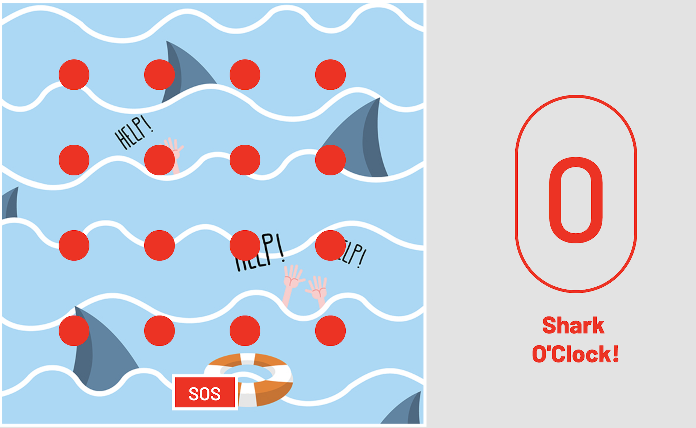
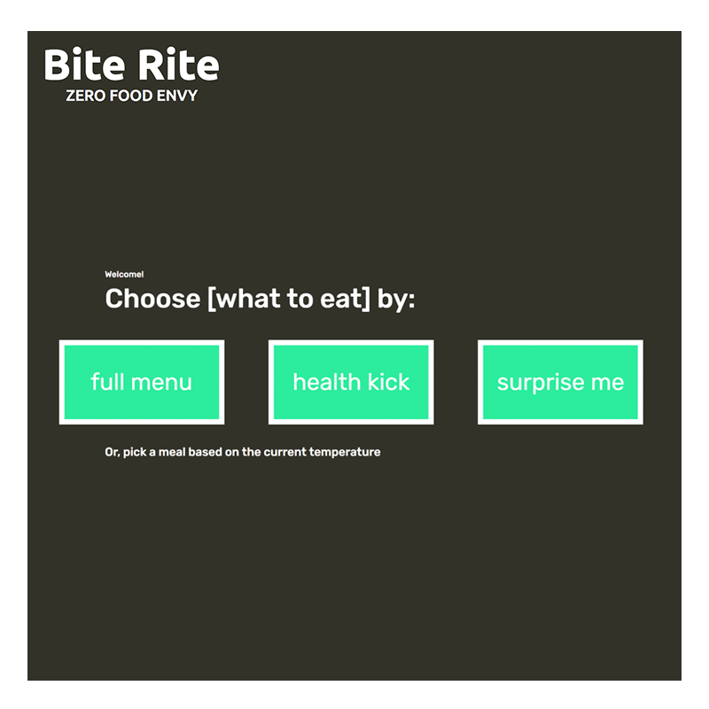
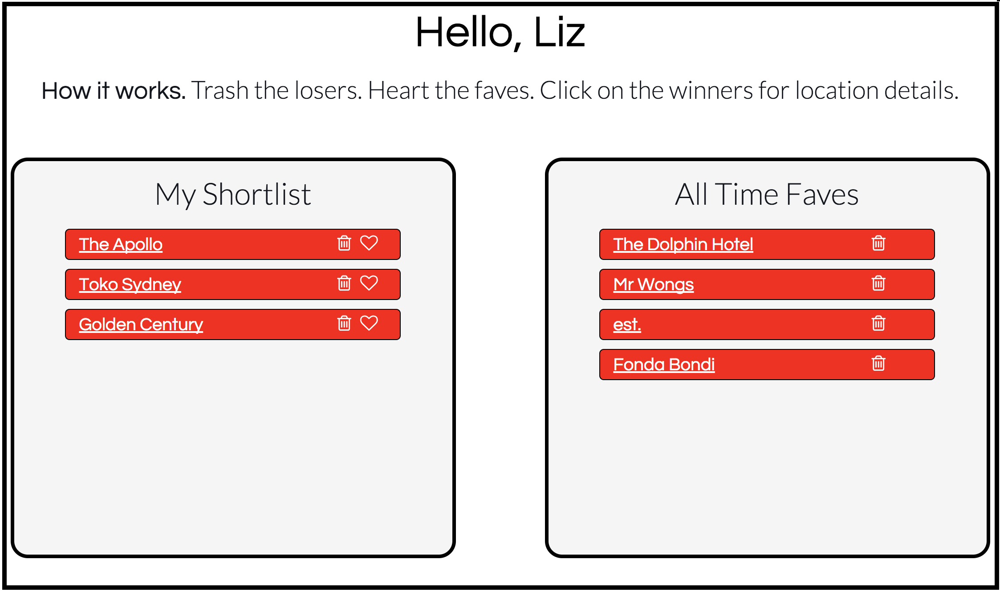
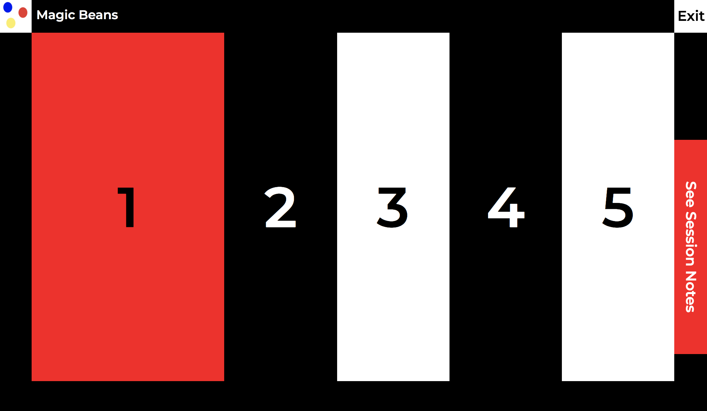
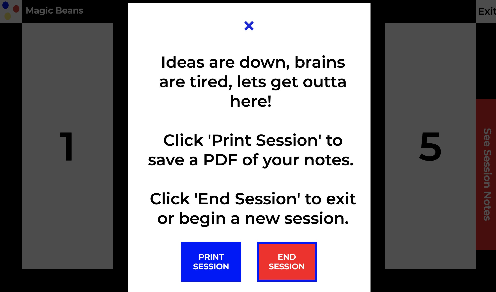

SEE SAM
Junior Frontend Developer.
Call me. 0420314690
Write (to) me. sam@cordandberg.com
Stalk me. @sxcordingley
Stalk me (literally). Living in Sydney
Hire me. Please.
Who Dis
I'M SAM
A Developer, who speaks Design.
After 4 years of working as a Project Manager & Art Director at an award-winning design agency, I’m ready to take on a new challenge as a junior front-end developer.
My career has been shaped by making things happen e ciently, e ectively and on-time in the fashion, lm and design industries. I have had the opportunity to work on a number of successful projects with a range of talented people. My eye for detail and thorough knowledge of the creative process enables me to work harmoniously with the creatively inclined and seamlessly with the technically focused. My background in business operations have given me exceptional organisational skills, as well as the ability to manage multiple tasks with ease; remaining passionate and focused on all aspects of a project to ensure it’s completion.
Project 0
Pizzza
Tic Tac Toe, Reimagined.

Pizza is designed to be played by two people from one computer. Whoever would like to take the first turn selects either the Face or Pizza icon, before selecting a square of their choice on the game board.
The icon they choose will display inside the square they click on. Then it's the second player's turn, they are automatically assigned the remaining icon.
The first player to get three icons in a row (vertically, horizontally or diagonally) wins!
Project 0A
SOS
Memory Game, Under Pressure.

SOS is designed to look like a series of red floating buoys in the ocean. The player must navigate across the buoys to safety, following the pattern revealed. To get to the next level they must correctly follow the pattern and beat the shark clock each time. There are 5 levels to complete before the game is won.
The next level will automatically begin each time the previous level is won, but the pattern won't reveal itself until the SOS button is clicked.
The game uses local storage to keep track of the number of levels passed. If the game is won or lost, the storage resets to zero.
Project 1
Bite Rite
Digital Menu App.

BiteRite is a digital menu assist application, designed to improve the user experience of deciding what to order at restaurants and cafes and also relieve the staff from answering so many questions about each dish. The test client for this application is a health food cafe.
The customer can view the menu in 4 different ways:
1. By selecting a 'health kick' or 'problem area' and have the application recommend meals targeting that problem.
2. They can ask the application to select meals based on what's most suited to the current weather.
3. They can request a random or surprise selection.
4. Or normally, by selecting the full menu option.
The application includes a simple CMS, where administrators can add / edit the menu and health benefit list and also add new administrators.
Project 2
Grumble
Tinder, For Food Choices.

Grumble makes food decisions easy. Forget having multiple tabs open trying to decide where to eat, as feuds and hanger quickly sets in. Grumble allows users to sign up / log on, search the suburb they want to eat in and toggle through the options, Tinder Style.
Click No: for no thanks. Yes: for 'maybe we should eat here tonight', and heart: to add to your favorites list.
The Grumble app solves the common question of: 'where / what should we eat? We hope the answer to this question will soon be: 'I don't know, check Grumble'.
Project 3
Magic Beans
Grow Your Idea.
 
Magic Beans is your essential Ideas Builder. Start a new session with Magic Beans any time you want to flesh out a new idea, define a new brand or revamp an existing one. This application is the perfect support tool for Creative Agencies running brainstorming sessions or client facing brand sessions, but it is intended to be used by anyone and everyone.
Progress through 5 easy steps to better understand new ideas / your brand and come away with a PDF document of your findings and a clear path forward.
Magic Beans is designed to get the user thinking creatively 'in the moment', so once a session ends (the end point dictated by the user), the session notes are saved to a PDF and erased, ready for your next idea. There's no sign up or profile creation, just jump on and grow your ideas.